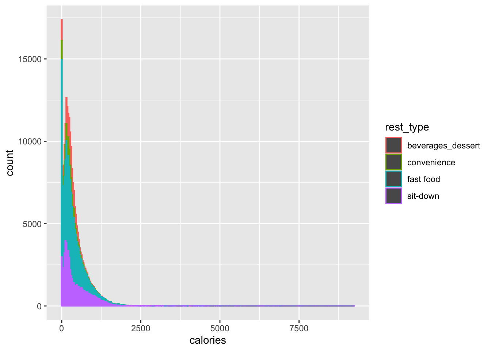
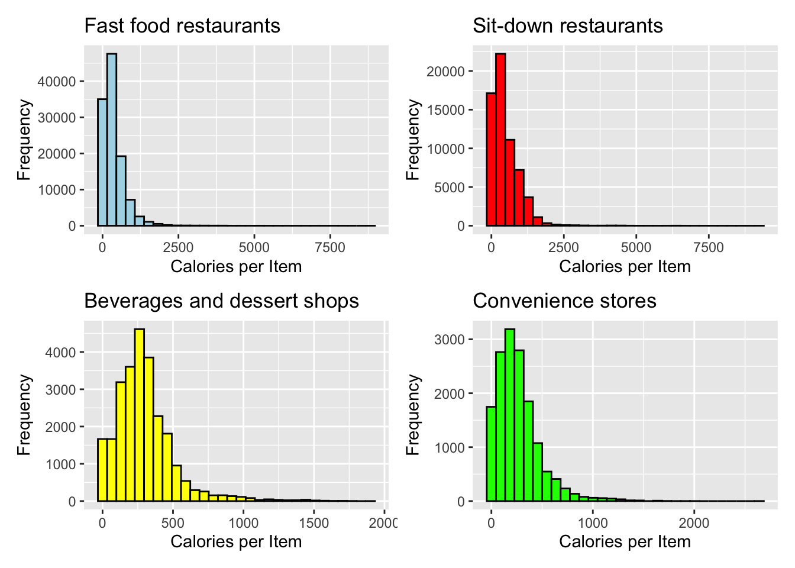
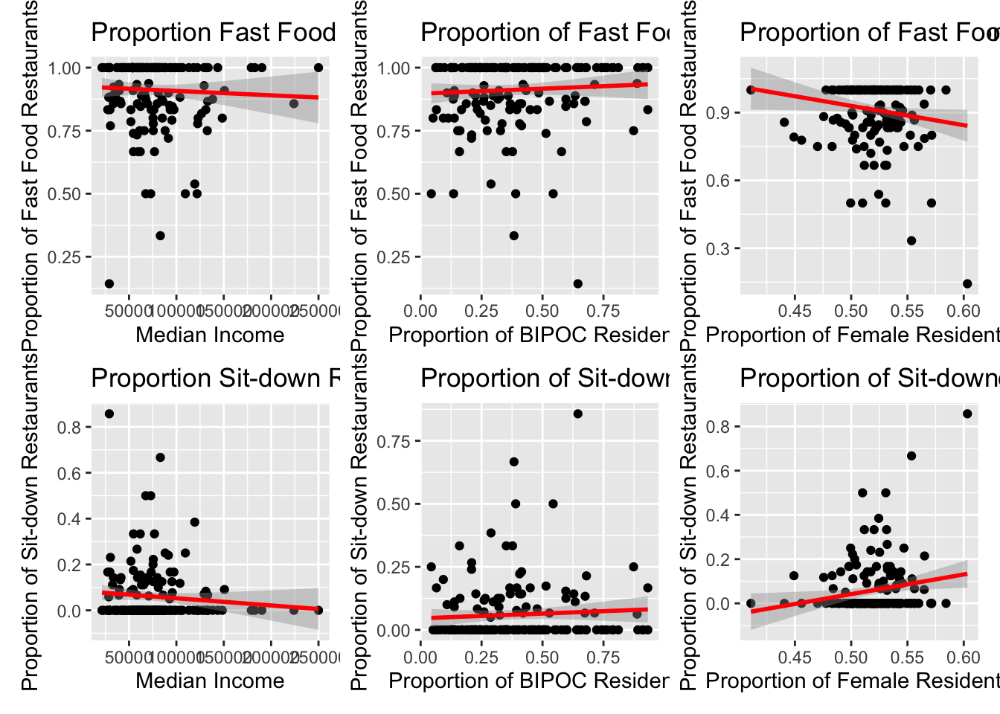
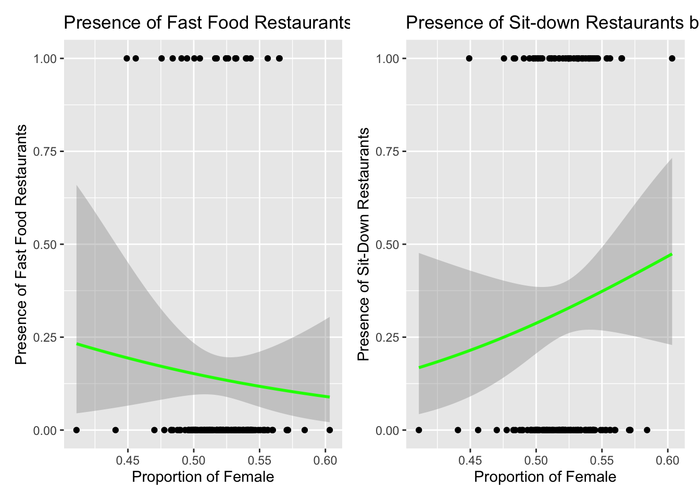

menustat_df = read_csv("data/menustat_combined.csv")
rest_locations = read_csv("data/restaurant_location.csv")library(tidyverse)
library(tidycensus)
rest_locations %>%
select(restaurant, rest_type) %>%
arrange(rest_type) %>%
distinct #59 restaurants## # A tibble: 59 × 2
## restaurant rest_type
## <chr> <chr>
## 1 STARBUCKS COFFEE beverages_dessert
## 2 TROPICAL SMOOTHIE CAFE beverages_dessert
## 3 KRISPY KREME beverages_dessert
## 4 DUNKIN’ beverages_dessert
## 5 JAMBA JUICE beverages_dessert
## 6 BASKIN ROBBINS beverages_dessert
## 7 MCDONALD'S fast food
## 8 POPEYES fast food
## 9 KFC fast food
## 10 CHIPOTLE MEXICAN GRILL fast food
## # … with 49 more rowsmenustat_df %>%
select(restaurant, rest_type) %>%
arrange(rest_type) %>%
distinct #59 restaurants## # A tibble: 106 × 2
## restaurant rest_type
## <chr> <chr>
## 1 Starbucks beverages_dessert
## 2 Baskin Robbins beverages_dessert
## 3 Dunkin' Donuts beverages_dessert
## 4 Jamba Juice beverages_dessert
## 5 Krispy Kreme beverages_dessert
## 6 Tropical Smoothie Café beverages_dessert
## 7 7 Eleven convenience
## 8 Sheetz convenience
## 9 Wawa convenience
## 10 Casey's General Store convenience
## # … with 96 more rowsmenustat_df %>%
select(restaurant, rest_type) %>%
arrange(rest_type) %>%
distinct #106 restaurants## # A tibble: 106 × 2
## restaurant rest_type
## <chr> <chr>
## 1 Starbucks beverages_dessert
## 2 Baskin Robbins beverages_dessert
## 3 Dunkin' Donuts beverages_dessert
## 4 Jamba Juice beverages_dessert
## 5 Krispy Kreme beverages_dessert
## 6 Tropical Smoothie Café beverages_dessert
## 7 7 Eleven convenience
## 8 Sheetz convenience
## 9 Wawa convenience
## 10 Casey's General Store convenience
## # … with 96 more rows#understanding the dataframes comparison
#install.packages("arsenal")
#summary(arsenal::comparedf(rest_locations, menustat_df))
#we are seeing NA's because "Jersey Mike's Subs" wasn't coded as anything as shown in the code chunk:
#rest_locations %>%
# group_by(restaurant) %>%
# filter(is.na(rest_type))
menustat_df %>%
summarise(across(everything(), ~sum(is.na(.x)))) %>%
knitr::kable() #no more NA's for variables we are using| restaurant | rest_type | year | menu_item_id | food_category | item_name | item_description | serving_size | serving_size_unit | serving_size_text | serving_size_household | calories | total_fat | saturated_fat | trans_fat | cholesterol | sodium | potassium | carbohydrates | protein | sugar | dietary_fiber | calories_100g | total_fat_100g | saturated_fat_100g | trans_fat_100g | cholesterol_100g | sodium_100g | potassium_100g | carbohydrates_100g | protein_100g | sugar_100g | dietary_fiber_100g | calories_text | total_fat_text | saturated_fat_text | trans_fat_text | cholesterol_text | sodium_text | potassium_text | carbohydrates_text | protein_text | sugar_text | dietary_fiber_text | kids_meal | limited_time_offer | regional | shareable |
|---|---|---|---|---|---|---|---|---|---|---|---|---|---|---|---|---|---|---|---|---|---|---|---|---|---|---|---|---|---|---|---|---|---|---|---|---|---|---|---|---|---|---|---|---|---|---|---|
| 0 | 0 | 0 | 0 | 0 | 0 | 0 | 98236 | 98525 | 216991 | 174377 | 0 | 0 | 1476 | 12139 | 2611 | 0 | 211033 | 0 | 1373 | 0 | 4425 | 107694 | 107685 | 108177 | 112992 | 108594 | 107692 | 215289 | 107701 | 108155 | 107743 | 108753 | 216475 | 216104 | 216208 | 216236 | 216746 | 217334 | 215999 | 215939 | 215209 | 216925 | 214358 | 23250 | 23249 | 22996 | 20672 |
###frequency visualizations stratified by restaurant type
#fast food calorie distribution
ff_cal = menustat_df %>%
select(rest_type, calories) %>%
filter(rest_type == "fast food") %>%
ggplot(aes(x = calories)) +
geom_histogram(fill = "light blue", color = "black") +
labs(
x = "Calories per Item",
y = "Frequency",
title = "Fast food restaurants"
)
#sit-down calorie distribution
sd_cal = menustat_df %>%
select(rest_type, calories) %>%
filter(rest_type == "sit-down") %>%
ggplot(aes(x = calories)) +
geom_histogram(fill = "red", color = "black") +
labs(
x = "Calories per Item",
y = "Frequency",
title = "Sit-down restaurants"
)
#bev_des calorie distribution
bevdes_cal = menustat_df %>%
select(rest_type, calories) %>%
filter(rest_type == "beverages_dessert") %>%
ggplot(aes(x = calories)) +
geom_histogram(fill = "yellow", color = "black") +
labs(
x = "Calories per Item",
y = "Frequency",
title = "Beverages and dessert shops"
) #has more spread in its mean
#convenience calorie distribution
conv_cal = menustat_df %>%
select(rest_type, calories) %>%
filter(rest_type == "convenience") %>%
ggplot(aes(x = calories)) +
geom_histogram(fill = "green", color = "black") +
labs(
x = "Calories per Item",
y = "Frequency",
title = "Convenience stores"
)
#geom_vline(aes(xintercept = mean(created_df$calories)),col='red',size=2)
menustat_df %>%
select(rest_type, calories) %>%
ggplot(aes(x = calories, color = rest_type)) +
geom_histogram(binwidth = 30)
ff_cal + sd_cal + bevdes_cal + conv_cal
####calculations for calories, total_fat, sodium, carbohydrates, sugar
##calories
#mean calories
menustat_df %>%
group_by(rest_type) %>%
summarise_at(vars(calories), list(name = mean))## # A tibble: 4 × 2
## rest_type name
## <chr> <dbl>
## 1 beverages_dessert 293.
## 2 convenience 262.
## 3 fast food 359.
## 4 sit-down 472.#median calories
menustat_df %>%
group_by(rest_type) %>%
summarise_at(vars(calories), list(name = median))## # A tibble: 4 × 2
## rest_type name
## <chr> <dbl>
## 1 beverages_dessert 270
## 2 convenience 220
## 3 fast food 270
## 4 sit-down 310##total fat
#mean fat
menustat_df %>%
group_by(rest_type) %>%
summarise_at(vars(total_fat), list(name = mean))## # A tibble: 4 × 2
## rest_type name
## <chr> <dbl>
## 1 beverages_dessert 8.70
## 2 convenience 9.48
## 3 fast food 15.5
## 4 sit-down 24.6#median fat
menustat_df %>%
group_by(rest_type) %>%
summarise_at(vars(total_fat), list(name = median))## # A tibble: 4 × 2
## rest_type name
## <chr> <dbl>
## 1 beverages_dessert 6
## 2 convenience 5
## 3 fast food 9
## 4 sit-down 15##sodium
#mean sodium
menustat_df %>%
group_by(rest_type) %>%
summarise_at(vars(sodium), list(name = mean))## # A tibble: 4 × 2
## rest_type name
## <chr> <dbl>
## 1 beverages_dessert 181.
## 2 convenience 363.
## 3 fast food 648.
## 4 sit-down 921.#median sodium
menustat_df %>%
group_by(rest_type) %>%
summarise_at(vars(sodium), list(name = median))## # A tibble: 4 × 2
## rest_type name
## <chr> <dbl>
## 1 beverages_dessert 125
## 2 convenience 160
## 3 fast food 333.
## 4 sit-down 530##carbs
#mean carbs
menustat_df %>%
group_by(rest_type) %>%
summarise_at(vars(carbohydrates), list(name = mean))## # A tibble: 4 × 2
## rest_type name
## <chr> <dbl>
## 1 beverages_dessert 47.8
## 2 convenience 36.7
## 3 fast food 42.9
## 4 sit-down 42.5#median carbs
menustat_df %>%
group_by(rest_type) %>%
summarise_at(vars(carbohydrates), list(name = median))## # A tibble: 4 × 2
## rest_type name
## <chr> <dbl>
## 1 beverages_dessert 42
## 2 convenience 32
## 3 fast food 33
## 4 sit-down 29##sugar
#mean sugar
menustat_df %>%
group_by(rest_type) %>%
summarise_at(vars(sugar), list(name = mean))## # A tibble: 4 × 2
## rest_type name
## <chr> <dbl>
## 1 beverages_dessert 39.5
## 2 convenience 25.3
## 3 fast food 22.4
## 4 sit-down 16.2#median sugar
menustat_df %>%
group_by(rest_type) %>%
summarise_at(vars(sugar), list(name = median))## # A tibble: 4 × 2
## rest_type name
## <chr> <dbl>
## 1 beverages_dessert 34
## 2 convenience 17
## 3 fast food 6
## 4 sit-down 7## creates the total_rest_acs dataframe
#DATAFRAME 1:REST
rest_locations_new = rest_locations %>%
group_by(zipcode, rest_type) %>%
summarise(num_rest_type = n()) %>%
pivot_wider(
names_from = "rest_type",
values_from = "num_rest_type"
) %>%
drop_na(zipcode) %>%
replace(is.na(.), 0) %>%
rename(fast_food = `fast food`,
sit_down = `sit-down`) %>%
mutate(total = beverages_dessert + fast_food + sit_down,
prop_bev = beverages_dessert/total,
prop_fast = fast_food/total,
prop_sit = sit_down/total,
logit_sit = ifelse(sit_down > 0, 1, 0),
logit_fast = ifelse(fast_food > 10, 1, 0)) %>%
select(-c(total))
#frequency of fast food outlets within a zipcode > median
#rest_locations_new %>%
# mutate(fast_food = as.numeric(fast_food)) %>%
# summarise(median = median(fast_food))
#DATAFRAME 2: ACS
nyc_acs = read_csv("data/nyc_acs_reg")
## JOIN ##
total_rest_acs = left_join(rest_locations_new, nyc_acs, by = "zipcode") %>%
drop_na()
## with drop_na (taking away NAs in nyc_acs proportions) we went from 172 to 167 zipcodes ##model lm
#proportion of fast food prediction
fit.fast <- lm(prop_fast ~ prop_white + prop_bipoc + prop_female + prop_other + med_income, data = total_rest_acs)
#summary(fit.fast)
fit_table_fast = fit.fast %>%
broom::tidy() %>%
knitr::kable(digits = 3)
#proportion of sit down prediction
fit.sit <- lm(prop_sit ~ prop_white + prop_bipoc + prop_female + prop_other + med_income, data = total_rest_acs)
#summary(fit.sit)
fit_table_sit = fit.sit %>%
broom::tidy() %>%
knitr::kable(digits = 3)
#model glm
#sit down
fit.logit.sit <- glm(logit_sit ~ prop_white + prop_bipoc + prop_female + prop_other + med_income, data = total_rest_acs, family = "binomial")
summary(fit.logit.sit)##
## Call:
## glm(formula = logit_sit ~ prop_white + prop_bipoc + prop_female +
## prop_other + med_income, family = "binomial", data = total_rest_acs)
##
## Deviance Residuals:
## Min 1Q Median 3Q Max
## -1.1687 -0.9108 -0.8212 1.4187 1.7267
##
## Coefficients:
## Estimate Std. Error z value Pr(>|z|)
## (Intercept) -8.365e+00 1.029e+01 -0.813 0.416
## prop_white 5.412e+00 1.020e+01 0.531 0.596
## prop_bipoc 5.323e+00 1.019e+01 0.522 0.602
## prop_female 5.819e+00 7.309e+00 0.796 0.426
## prop_other 4.784e+00 1.079e+01 0.444 0.657
## med_income -6.789e-06 6.734e-06 -1.008 0.313
##
## (Dispersion parameter for binomial family taken to be 1)
##
## Null deviance: 210.21 on 166 degrees of freedom
## Residual deviance: 207.22 on 161 degrees of freedom
## AIC: 219.22
##
## Number of Fisher Scoring iterations: 4logit_table_sit = fit.logit.sit %>%
broom::tidy() %>%
knitr::kable(digits = 3)
#fast food
fit.logit.fast <- glm(logit_fast ~ prop_white + prop_bipoc + prop_female + prop_other + med_income, data = total_rest_acs, family = "binomial")
summary(fit.logit.fast)##
## Call:
## glm(formula = logit_fast ~ prop_white + prop_bipoc + prop_female +
## prop_other + med_income, family = "binomial", data = total_rest_acs)
##
## Deviance Residuals:
## Min 1Q Median 3Q Max
## -0.9505 -0.5701 -0.5028 -0.4386 2.2655
##
## Coefficients:
## Estimate Std. Error z value Pr(>|z|)
## (Intercept) -4.490e+00 1.499e+01 -0.299 0.765
## prop_white 8.180e+00 1.467e+01 0.558 0.577
## prop_bipoc 9.579e+00 1.461e+01 0.656 0.512
## prop_female -1.093e+01 9.255e+00 -1.181 0.238
## prop_other 7.743e+00 1.554e+01 0.498 0.618
## med_income -7.234e-07 8.419e-06 -0.086 0.932
##
## (Dispersion parameter for binomial family taken to be 1)
##
## Null deviance: 133.87 on 166 degrees of freedom
## Residual deviance: 131.09 on 161 degrees of freedom
## AIC: 143.09
##
## Number of Fisher Scoring iterations: 4logit_table_fast = fit.logit.fast %>%
broom::tidy() %>%
knitr::kable(digits = 3)##Linear regression plots: fast food
#female
fem_ff = ggplot(total_rest_acs, aes(x = prop_female, y = prop_fast)) +
geom_point() +
geom_smooth(method = "lm", col = "red") +
labs(
title = "Proportion of Fast Food Restaurants by Proportion of Female in Population",
x = "Proportion of Female Residents",
y = "Proportion of Fast Food Restaurants"
)
## question: x is proportion female but X lab was total population? And y lab was income? we assumed the labels were wrong and changed
## interpretation: as female proportion increases fast food prop decreases
#bipoc
bipoc_ff = ggplot(total_rest_acs, aes(x = prop_bipoc, y = prop_fast)) +
geom_point() +
geom_smooth(method = "lm", col = "red") +
labs(
title = "Proportion of Fast Food Restaurants by Proportion of BIPOC in Population",
x = "Proportion of BIPOC Residents",
y = "Proportion of Fast Food Restaurants"
)
## interpretation: as BIPOC proportion increases fast food prop increases
#medincome
med_in_ff = ggplot(total_rest_acs, aes(x = med_income, y = prop_fast)) +
geom_point() +
geom_smooth(method = "lm", col = "red") +
labs(
title = "Proportion Fast Food Restaurants by Median income",
x = "Median Income",
y = "Proportion of Fast Food Restaurants"
)
## interpretation: as median income increases fast food prop SLIGHTLY decreases
## check coefficients
##Linear regression plots: sit down
#female
fem_sit = ggplot(total_rest_acs, aes(x = prop_female, y = prop_sit)) +
geom_point() +
geom_smooth(method = "lm", col = "red") +
labs(
title = "Proportion of Sit-down Restaurants by Proportion of Female in Population",
x = "Proportion of Female Residents",
y = "Proportion of Sit-down Restaurants")
#bipoc
bipoc_sit = ggplot(total_rest_acs, aes(x = prop_bipoc, y = prop_sit)) +
geom_point() +
geom_smooth(method = "lm", col = "red") +
labs(
title = "Proportion of Sit-down Restaurants by Proportion of BIPOC in Population",
x = "Proportion of BIPOC Residents",
y = "Proportion of Sit-down Restaurants"
)
#medincome
med_in_sit = ggplot(total_rest_acs, aes(x = med_income, y = prop_sit)) +
geom_point() +
geom_smooth(method = "lm", col = "red") +
labs(
title = "Proportion Sit-down Restaurants by Median income",
x = "Median Income",
y = "Proportion of Sit-down Restaurants"
)
##Logistic regression plots
#logit sit down
log_SIT = ggplot(total_rest_acs, aes(x= prop_female, y= logit_sit)) +
geom_point() +
stat_smooth(method="glm", color="green", se=TRUE, method.args = list(family=binomial)) +
labs(
title = "Presence of Sit-down Restaurants by Proportion of Female Residents",
x = "Proportion of Female",
y = "Presence of Sit-Down Restaurants"
)
## as proportion of female residents increases the presence of sit down restaurants increases
#logit fast food
log_FF = ggplot(total_rest_acs, aes(x= prop_female, y= logit_fast)) +
geom_point() +
stat_smooth(method="glm", color="green", se=TRUE, method.args = list(family=binomial)) +
labs(
title = "Presence of Fast Food Restaurants by Proportion of Female Residents",
x = "Proportion of Female",
y = "Presence of Fast Food Restaurants"
)
## as proportion of female residents increases the presence of fast food restaurants decreases
##formating linear graph
med_in_ff + bipoc_ff + fem_ff + med_in_sit + bipoc_sit + fem_sit
## formatting log graphs
log_FF + log_SIT